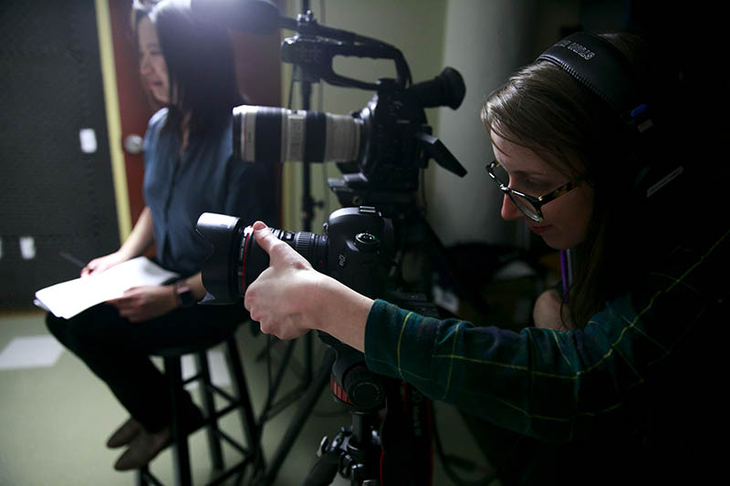
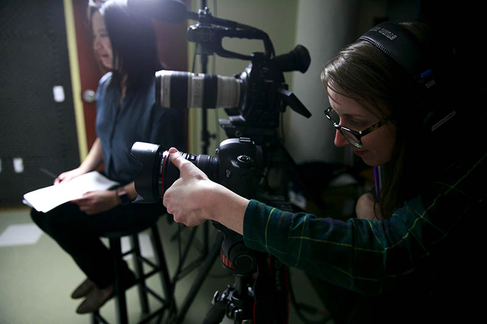

Under Our Skin grew out of conversations about how we at The Seattle Times cover race. Prompted by national and local events — the police shootings of people of color, the rise of the Black Lives Matter movement and race-related protests on college campuses — we’ve found ourselves talking more candidly about race and racism, and struggling to make sense of these developments for ourselves and our readers.
As a news organization, we’ve covered the local events as breaking stories that explain the who, what and where of what happened. But we haven’t done enough digging into the why. Under Our Skin is part of an effort to deepen our reporting on race, and provide a foundation for more thoughtful conversations.
 

We decided to examine words and phrases because we noticed people were using many of them very differently. We picked a dozen that we were hearing frequently inside and outside of work, then invited 18 people to our video studio to share what each of those terms means to them. Along the way, we dropped a few words and added others that interviewees suggested. In selecting interviewees, we sought people with a range of experiences, backgrounds, races and ages — some of whom we thought would offer fresh perspectives and challenge common assumptions.
The conversations went well beyond the words into each of the interviewees’ lives. They sometimes stretched well beyond an hour, and were insightful, thought-provoking, honest, and sometimes funny — and sometimes uncomfortable.
We invite you to share these videos with friends, family, colleagues, students — and let us know what results from that. We’d also like to hear your ideas for future coverage because this is a beginning of what we hope will be an ongoing conversation with you, our viewers.
With many thanks to our 18 interviewees, and all of you,
The Under Our Skin team


Additional support: Daniel Beekman, Jerry Large, Katherine Long, Caitlin Moran, Nina Shapiro, Thomas Wilburn
Special thanks to Brian Harding and George Marlowe
Originally published June tktk, 2016